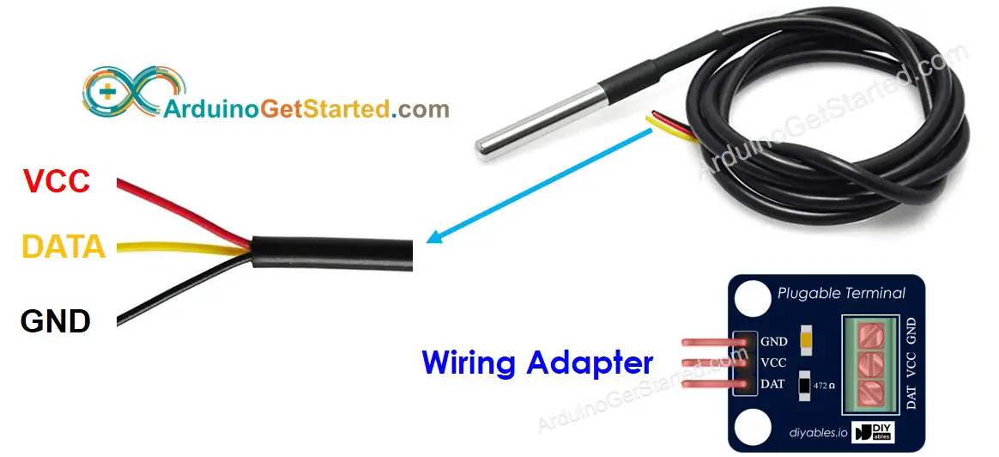
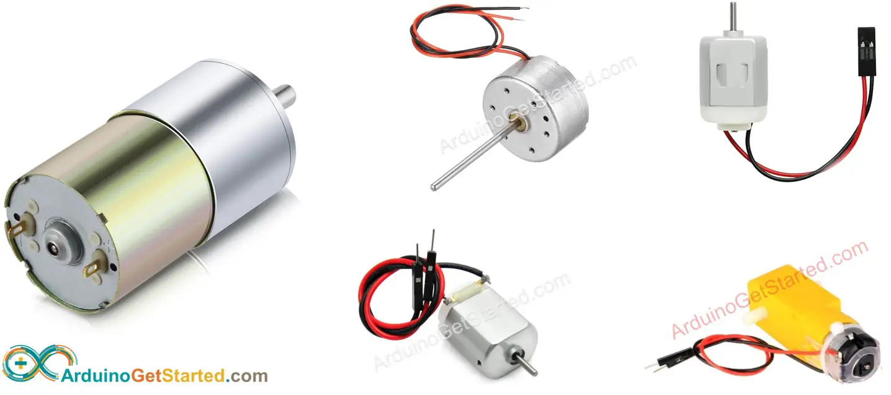
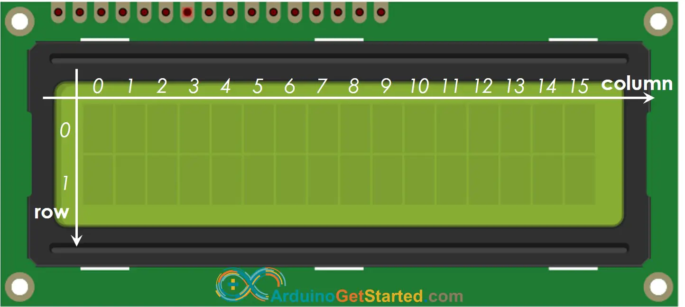
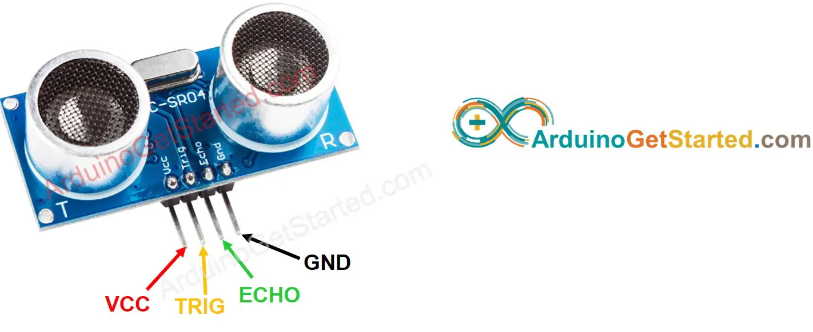
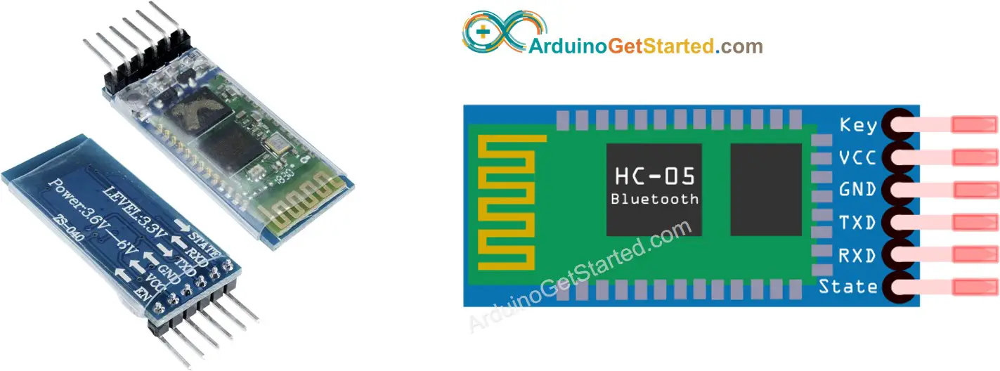

DS18B20 temperature sensor has three pins:
GND pin: needs to be connected to GND (0V)
VCC pin: needs to be connected to VVC (5V or 3.3V)
DATA pin: is 1-Wire Data bus. It should be connected to a digital pin on Arduino.
Connecting a DS18B20 temperature sensor to an Arduino requires a pull-up resistor, which can be a hassle. However, some manufacturers simplify the process by offering a wiring adapter that has a built-in pull-up resistor and a screw terminal block, making it much easier.

The DC motor is the most basic of electric motors and is used in all types of hobby electronics. This guide provides you some basic information about the DC motors, how you can connect it to your Arduino, and how you can use it with Ozeki 10. The document also includes diagrams and videos to help you to understand the concept behind DC motors.
Positive wire: usually red
Negative wire: usually black

The LCD (Liquid Crystal Display) is a type of display that uses the liquid crystals for its operation. Here, we will accept the serial input from the computer and upload the sketch to the Arduino. The characters will be displayed on the LCD.
LCD has up to 16 pins. In the most common uses, we do NOT use all pins.
With the support of LiquidCrystal library, we even can use LCD WITHOUT knowing the meaning of these pins. However, if you are curious or want to know in-depth, let's see these pins and their functionality:

Ultrasonic sensor HC-SR04 is used to measure the distance to an object by using ultrasonic waves.
VCC pin: needs to be connected to VCC (5V)
GND pin: needs to be connected to GND (0V)
TRIG pin: this pin receives the control signal (pulse) from Arduino.
ECHO pin: this pin sends a signal (pulse) to Arduino. Arduino measures the duration of pulse to calculate distance.

HC-05 is a serial Bluetooth Serial port protocol module that is easy to use. You can communicate with HC-05 over serial protocol. It does:
Receive data from the Serial RX pin and transmit the data to the paired device (such as a smartphone) via Bluetooth
Receive data from Bluetooth (from the paired device) and send the data to the Serial TX pin.
The UART-style communication mode makes it a favorite choice for Arduino enthusiasts.
